Examen sujet
1 Sujet
Pour les 3 groupes, l’exercice était le même, il fallait choisir une commune dans un lot proposé et en faire une analyse uni et bivariée. Il fallait également justifier son choix, présenter ses données, et comparer avec le cas de Bondy.
2 Préparation des données
2.1 Sujet 1 : données RPLS - Communes Est Ensemble
2.1.1 Identification des communes
2.1.2 Données population insee
2.1.3 Recodage (fonctions)
2.1.4 Cartographie
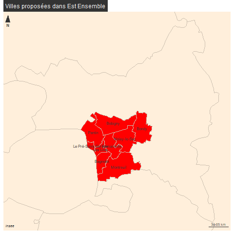
2.1.5 Un fichier par commune
verif
2.2 Sujet 2 : données RPLS - Communes de 60 M hbts en Ile de France
Identification des communes

Vérification
Test sur les NBPIECES
2.3 Sujet 3 : données RPLS - Communes de 60 M hbts en France
Identification des communes
Cartographie
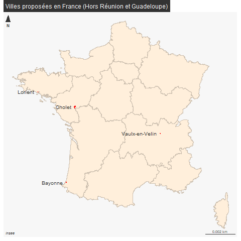
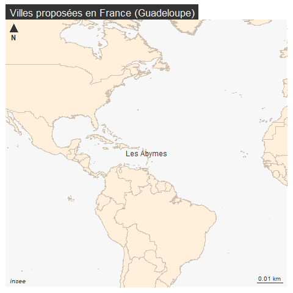
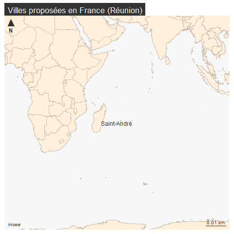
Vérification
3 Barême
3.1 Global
element <- c("soin", "description des données", "univarié", "bi-varié", "comparaison")
bareme <- c(3,5,5,5,2)
df <- data.frame(element, bareme)
knitr::kable(df)| element | bareme |
|---|---|
| soin | 3 |
| description des données | 5 |
| univarié | 5 |
| bi-varié | 5 |
| comparaison | 2 |
3.2 Détail
element2 <- c("pdf / presentation", "mots clés / description", "graphiques / indicateurs / commentaires", "graphiques / indicateurs / commentaires", "tentative / OK")
df$element2 <- element2
knitr::kable(df)| element | bareme | element2 |
|---|---|---|
| soin | 3 | pdf / presentation |
| description des données | 5 | mots clés / description |
| univarié | 5 | graphiques / indicateurs / commentaires |
| bi-varié | 5 | graphiques / indicateurs / commentaires |
| comparaison | 2 | tentative / OK |
Le barème vous permettait d’avoir la moyenne sans faire aucune statistique, simplement en répondant aux questions posées.
4 Elements de corrections
Une correction type est disponible sur le site. Les remarques qui suivent sont issues des copies d’étudiants.
4.1 soins
4.1.1 prenom.pdf
Ce n’était pas dur et pourtant…
data <- read.csv("data/statsExamen.csv")
knitr::kable(data)| X | nb.copies | prenom.ok |
|---|---|---|
| gr1 | 18 | 8 |
| gr2 | 19 | 8 |
| gr3 | 24 | 18 |
4.1.2 A qui s’adresse t on ?
“Bonjour, Monsieur le Directeur Général des Services Techniques”….
-1 pt pour l’étudiante qui avait eu 20 au 2e passage…
4.2 Présentation des données
Il s’agissait de justifier le choix mais également de dire d’où venait le RPLS. J’ai adapté le barème en conséquence.
4.2.1 Justification du choix
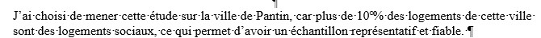
Est-ce suffisant ?
4.2.2 Autre justification
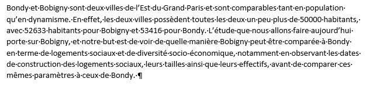
4.2.3 Qu’est ce que le RPLS
Une première proposition :
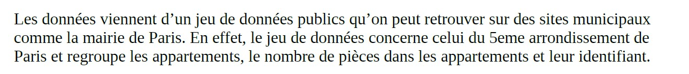 Il aurait été très intéressant d’approfondir la notion.
Une deuxième proposition :
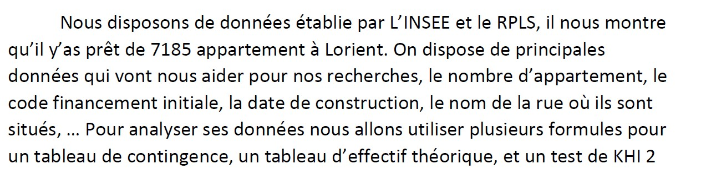
4.3 Analyse univariée
Certains étudiants ont présenté les variables à utiliser dans le bivariés. C’était une très bonne approche.
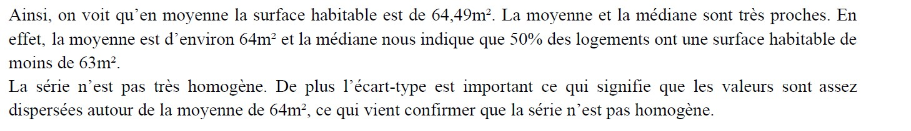  Beaucoup d’étudiants ont eu ce genre de
graphique, beaucoup plus régulier qu’à Bondy.
Beaucoup d’étudiants ont eu ce genre de
graphique, beaucoup plus régulier qu’à Bondy.
4.4 Bivariées
Dans la correction type, j’ai mis un exemple de régression. Mais beaucoup d’étudiants ont choisi de faire un khi2 notamment avec les deux variables codées : FINANcode et taille. C’était une bonne idée de relier finances et taille de l’appartement.
En fait, il était inutile de donner tous les tableaux, les premières lignes suffisaient.
L’explication de H0 et de son rejet (aucun étudiant n’a eu de cas d’acceptation de H0) était nécessaire.
Aucun étudiant n’a parlé de la contribution au khi2.
Pour mon exemple, cela serait peut-être :
“J’observe que les plus pauvres des locataires représentent 3/4 de la contribution au khi2, cela signifie que le logement social le plus grand est réservé aux ménages les moins pauvres, ce qui peut paraître paradoxal à moins que nous partions de l’hypothèse que les familles les plus pauvres ont moins d’enfants, ou sont plutôt de type monoparental.”
Sur St André, cela donne :
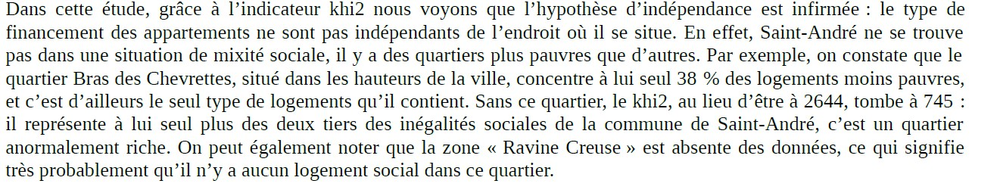
4.5 Comparaison avec Bondy
L’idéal était de commencer sur la comparaison en justifiant le choix et de conclure dessus.
Une bonne conclusion.
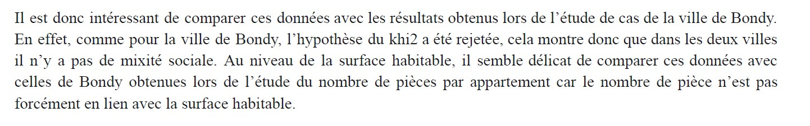
L5GEABIM Analyses bivariées et multivariées